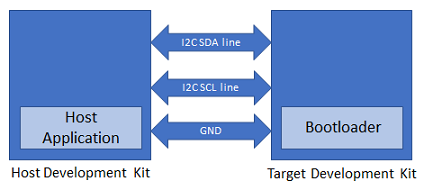
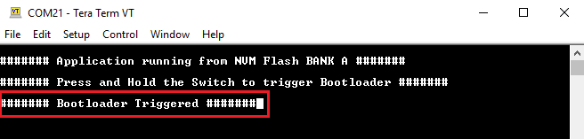

1.2.1 SAM E54 Xplained Pro Evaluation Kit: Building and Running the I2C Fail Safe Bootloader applications
Path of the application within the repository is apps/i2c_fail_safe_bootloader/
To build the application, refer to the following table and open the project using its IDE.
Bootloader Application
| Project Name | Description |
|---|---|
| bootloader/firmware/sam_e54_xpro.X | MPLABX Project for SAM E54 Xplained Pro Evaluation Kit |
Test Application
| Project Name | Description |
|---|---|
| test_app/firmware/sam_e54_xpro.X | MPLABX Project for SAM E54 Xplained Pro Evaluation Kit |
Setting up SAM E54 Xplained Pro Evaluation Kit
SAM E54 Xplained Pro Evaluation Kit is used for both Host Development kit and Target Development kit
Connect the I2C SDA line Pin 11 (SERCOM7 PAD/PD08) on EXT3 of the Host development kit to the I2C SDA line Pin 11 (SERCOM3 PAD/PA22) on EXT1 of the Target development kit
Connect the I2C SCL line Pin 12 (SERCOM7 PAD/PD09) on EXT3 of the Host development kit to the I2C SCL line Pin 12 (SERCOM3 PAD/PA23) on EXT1 of the Target development kit
Connect a ground wire between the Host development kit and Target development kit
Connect the Debug USB port on the Host development kit to the computer using a micro USB cable
Connect the Debug USB port on the Target development kit to the computer using a micro USB cable
Running the Application
Open the bootloader project bootloader/firmware/sam_e54_xpro.X in the IDE
Build and program the application using the IDE on to the Target development kit
LED0 will be turned-on to indicate that bootloader code is running on the target
LED0 will also turn on when the bootloader does not find a valid application; i.e. the first word of the application (stack pointer), contains 0xFFFFFFFF
Open the NVM host application project host_app_nvm/firmware/sam_e54_xpro.X in the IDE
Build and program the NVM host application using the IDE on to the Host development kit
The prebuilt combined bootloader and application HEX header file host_app_nvm/firmware/src/test_app_images/image_pattern_hex_sam_e54_xpro_bootloader_app_merged.h will be programmed to the Target Development kit
This must be programmed once to program both bootloader and application into the inactive flash bank
Open the Terminal application (Ex.:Tera Term) on the computer
Configure the serial port settings for Target Development kit as follows:
Baud : 115200
Data : 8 Bits
Parity : None
Stop : 1 Bit
Flow Control : None
Press the Switch SW0 on the Host development kit to trigger programming of the binary
Once the programming is complete,
LED0 on the Host development kit will be turned on indicating success
LED0 on the Target development kit should start blinking and you should see below output on the console
The NVM Flash Bank Can be BANK A or BANK B based on from where the test application is running


Press and hold the Switch SW0 on the Target development kit to trigger Bootloader from test application
This is to program the application binary in other bank and you should see below output
To program the prebuilt application image host_app_nvm/firmware/src/test_app_images/image_pattern_hex_sam_e54_xpro.h to the inactive bank of Target Development kit, Open the "user.h" file of the NVM host application project host_app_nvm/firmware/sam_e54_xpro.X as shown below:

In the "user.h" file update the APP_HEX_HEADER_FILE and APP_IMAGE_START_ADDR values as mentioned below
#define APP_HEX_HEADER_FILE "test_app_images/image_pattern_hex_sam_e54_xpro.h" #define APP_IMAGE_START_ADDR 0x82000UL
APP_HEX_HEADER_FILE: Relative path to the generated header file containing the application hex image in an array
APP_I2C_SLAVE_ADDR: I2C slave address
APP_ERASE_PAGE_SIZE: Erase page size of the target (target = MCU being programmed)
APP_PROGRAM_PAGE_SIZE: Program page size of the target (target = MCU being programmed).
The macro can either be set to the program page size or can be set to the size of the erase page size of the target.
In the demo example, the macro is set equal to the size of the erase page.
On embedded host where RAM is limited, the macro may be set to the actual program page size to reduce the RAM used to hold the program data.
APP_IMAGE_START_ADDR: User application start address
It must be set to 0x80000UL when programming the combined bootloader and application binary to the inactive bank
It must be set to 0x82000UL when programming the application binary only to the inactive bank
Build and program the NVM host application using the IDE on to the Host development kit
On the Target Development Kit (the board being programmed), press and hold the Switch SW0 and then press Reset button or Power cycle to force trigger bootloader at startup
LED0 will be turned-on to indicate that bootloader code is running on the target
Press Reset button on the Host development kit to program the application binary
Repeat Steps 7-8 once
You should see other Bank in console displayed compared to first run
Additional Steps (Optional)
Generating Hex Image pattern for an application to be bootloaded

To bootload any application other than host_app_nvm/firmware/src/test_app_images/image_pattern_hex_sam_e54_xpro.h refer to Application Configurations
Build the application project to generate the binary (Do not program the binary)
Convert the generated binary (.bin file) to a header file containing the image data in a C style array:
On a Windows machine, open the command prompt and run the btl_bin_to_c_array utility to generate a header file containing the image data in an array
python <harmony3_path>/bootloader/tools/btl_bin_to_c_array_gen.py -b <binary_file> -o <harmony3_path>/bootloader_apps_i2c/apps/i2c_fail_safe_bootloader/host_app_nvm/firmware/src/test_app_images/image_pattern_hex_sam_e54_xpro.h -d same5xOnce done repeat the applicable steps mentioned in Running The Application
Generating Hex Image pattern for Commbined Bootloader and Application Binary
Launch MCC for the bootloader project bootloader/firmware/sam_e54_xpro.X
Select system component from the project graph and disable fuse settings
Disable Fuse Settings:
Fuse settings needs to be disabled for the bootloader which will be boot-loaded as the fuse settings are supposed to be programmed through programming tool
Also the fuse settings are not programmable through firmware
Enabling the fuse settings also increases the size of the binary when generated through the hex file

Regenrate the project
Specifing post build option to automatically generate the binary file from hex file once the build is complete
${MP_CC_DIR}/xc32-objcopy -I ihex -O binary ${DISTDIR}/${PROJECTNAME}.${IMAGE_TYPE}.hex ${DISTDIR}/${PROJECTNAME}.${IMAGE_TYPE}.binBuild the bootloader project to generate the bootloader binary (Do not program the binary)
Build the sample application test_app (or any other application configured to bootload) using IDE to generate the application binary (Do not program the binary)
On a Windows machine, open the command prompt
Run the btl_app_merge_bin.py utiliy from command prompt to merge the generated Bootloader binary and test application binary. Below output should be displayed on command prompt
python <harmony3_path>/bootloader/tools/btl_app_merge_bin.py -o 0x2000 -b <harmony3_path>/bootloader_apps_i2c/apps/i2c_fail_safe_bootloader/bootloader/firmware/sam_e54_xpro.X/dist/sam_e54_xpro/production/sam_e54_xpro.X.production.bin -a <harmony3_path>/bootloader_apps_i2c/apps/i2c_fail_safe_bootloader/test_app/firmware/sam_e54_xpro.X/dist/sam_e54_xpro/production/sam_e54_xpro.X.production.bin
Run btl_bin_to_c_array utility to convert the generated merged binary btl_app_merged.bin to a header file containing the image data in a C style array
The merged binary will be created in the directory from where the script was called
python <harmony3_path>/bootloader/tools/btl_bin_to_c_array.py -b <Path_to_merged_binary>/btl_app_merged.bin -o <harmony3_path>/bootloader_apps_i2c/apps/i2c_fail_safe_bootloader/host_app_nvm/firmware/src/test_app_images/image_pattern_hex_sam_e54_xpro_bootloader_app_merged.h -d same5xOnce done repeat the applicable steps mentioned in Running The Application